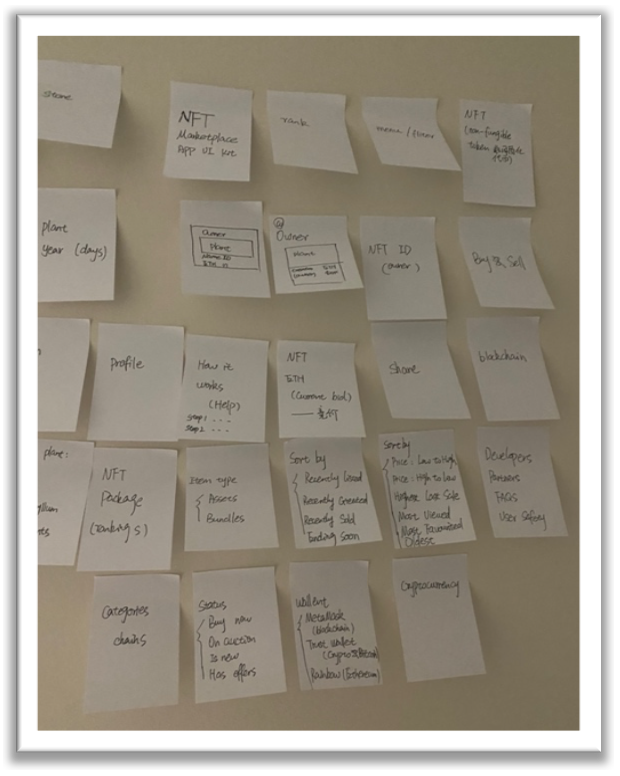

G-Garden is an online plant raising app based on NFT that allows growing plants to make online plants have a higher value. Measure the value of the plants you keep by the values of NFT.
The idea comes from my hobby, I am a plant lover, but I cannot have plants at home because of my kittens.
I discovered that many plant lovers couldn't grow plants indoors due to practical factors such as health conditions,
pets at home, or people being busy at work. My initial plan was to design an online plant growing application to help
users unable to grow plants indoors realize their planting dream.
A recent news story caught my curiosity: "NBA icon Stephen Curry buys Bored Ape NFT for $180,000,"
according to the Theblockcrypto website. After doing some research, I found that "digital art" was causing a wave of popularity
on the Internet. All the "digital artworks" are represented by NFTs, and each artwork is unique and untamable.
Many NFT platforms provide a choice of "digital artworks" such as paintings, music, photos, etc.
The NFT platform also offers a variety of digital art options that are like the adoptive ones, such as Crypto Kitties,
doge, and Crypto Trees.
After conducting user research, I decided to design and create an application：
It is an application that combines indoor plant growing and NFT, where users can purchase plants based on their type,
age, and shape to determine the value of the selected plants. This application allows users who cannot grow plants
in real life to enjoy growing plants while increasing the value of these digital plants.
Our goal is to make it a universal template that is available for numerous platforms.
Challenge
Plant lovers have the following problems:
If you have plants at home, some of them may lead to family pets poisoned.
It is difficult to grow plants because they are often careless about plants on their business days.
Tracking the plant growing process systematically.
People hope that technology can enhance the value of the plants.
These problems will be solved by creating:
A platform including App and Website will guide users in growing digital plants and measure the valuation of the digital plants.
The effect will be reflected in:
More plant lovers will be able to grow their plants and increase their value through this platform. More people will learn about NFT, combining technology, art, and life. Cultivate your satisfactory plants based on cryptographic protection of property rights.
The Process
Mind Storming

|
||
|  | ||
Mind Mapping

Persona
About Tony Lee
Tony Lee is a plant lover. He worked at a start-up company as a full-stack engineer. He often gets the latest idea and news. For the complex works, his working must lose a lot of personal time. He has a kitten named Yoki at home. Yoki was poisoned by eating Tony’s plant last year. Tony must throw out all the plants at home to protect his kitten. He was sad that he had to choose one between indoor plants and kittens. He hopes that he can grow indoor plants, even if as a virtual plant.
“I hope that I could grow plants at home one day even if as a virtual plant”.
Goals
a. Make a balance between pets and plants.
b. As a virtual growing app, make users have an immersive experience.
c. Enhance the artistic value of plants in the platform of NFT when growing them online.
Frustrations
a. Because of pets, plants lover cannot plant at home.
b. Growing indoor plants will take a lot of time.
c. Nowadays, financial management is increasing. How to make financial management and habits together is a huge challenge.
Tony’s Story

Tony’s Need
01.Find (Plants & NFT)
Find an NFT platform that can grow some green plants online. And his online plants have value as art.
02.Registration
Registration online, get his plant with NFT ID and choose the wallet to connect with the platform.
03.Growing Online
Tony could grow a green plant online, and with fitting water and sunny, the plant will improve its value.
Prototyping Summary

Key Features

After Using this Platform
Mobile-UX-Flow
Web-UX-Flow
Prototyping

G-Garden mobile system
Users plant their favorite plants online.
Viewing plants value, carefully planting to improve plants value.
Home, Ranking, Search, and portfolio buttons in this app.
Registration

Registration on the mobile
When users first enter into the app,
from pictures to choose their interest plant category to view.
View Plants

After choosing the plant category,
the detailed introduction about plants will appear.
Users free to buy their favourite plants.
Homepage

Login with users' email.
The homepage will show three categories on the top:
Common plants, Easily to plant(for busy people), and popular plants.
8 categories of plants on the platform shown on the homepage.
Plant Details

All plants details are shown for users.
Users could subscribe their favourite by using their account.
Users could share online plants with friends.
Ranking

Choose to prefer room number,
room image information on the left,
room details information on the right.
Searching
From the Search page,
users could use search bar to search their favourite plant.
Profile
From the Profile page
shown users' owned items and subscription items.
Lighting

Creator could choose lighting time every day.
The frequency and lighting hours could be set by every creator.
When the plant is lighting, the Sunny logo will be filled with yellow.
Watering

The creator could choose Watering times and water consumption every day.
After setting the watering button, the watering logo will be filled with blue.
G-garden Website

G-garden not only has a mobile app but also has a website.
From the website page, users could read more information from the website
both about registration and plants details.
Final Design --- Mobile

|
Final Design --- Website
Conclusion
G-Garden is an app that satisfies plant lovers. NFT is very popular as a cryptocurrency at the moment. I envisioned this program to be a template for future NFT applications or online plant cultivation applications. The magic of this application, which combines plant cultivation and NFT, is that through patient and careful cultivation by the user, online plants may grow rare pendants and optional "energy" to increase the value of the plant.
Challenge in the future
If there is a chance, I would like to exchange ideas with users about the future use of this application after it develops. Exchange the experience of using it frequently to get valuable feedback. To make sure the team can solve the problem correctly and approach the goal at a steady pace. At the beginning of the project, when all the big problems are divided into smaller ones and solved one by one during the production process to avoid duplication of efforts, the project will be completed more efficiently.